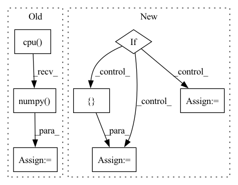

Pattern ID :28748
Before Change
logits_adv = self._adversary.forward(
observation, deterministic, return_log_prob=True
)[-1]
logits_pi = logits_pi.detach().cpu().numpy() .flatten()
logits_adv = logits_adv.detach().cpu().numpy().flatten()
return action, log_pi, adv_log_pi, logits_pi, logits_adv
return action, log_pi, adv_log_piAfter Change
// compute additional distribution information
actor_distrib = self._actor.compute_distribution(observation)
adversary_distrib = self._adversary.compute_distribution(observation)
if self._discrete:
params_pi = outs[-1]
params_adv = adversary_distrib.logits
params_pi = params_pi.detach().cpu().numpy().flatten()
params_adv = params_adv.detach().cpu().numpy().flatten()
else:
mean = actor_distrib.mean.detach().cpu().numpy().flatten()
scale = actor_distrib.scale.detach().cpu().numpy().flatten()
params_pi = np.concatenate([ mean, scaleIn pattern: SUPERPATTERN
Frequency: 3
Non-data size: 7
Instances Fragment ID: 84655242
Project Name: yfletberliac/adversarially-guided-actor-critic
Commit Name: 4958ecb8ca6e7e344852f7aa9fc8668cd8cd074b
Time: 2021-07-07
Author: cibeah.cb@gmail.com
File Name: agac_torch/agac/agac_ppo.py
M Class Name: PPO
N Class Name: PPO
M Method Name: select_action(3)
N Method Name: select_action(4)
M Parent Class:
N Parent Class:
M File Name: agac_torch/agac/agac_ppo.py
N File Name: agac_torch/agac/agac_ppo.py
M Start Line: 115
M End Line: 138
N Start Line: 121
N End Line: 146
Before Change
y, feature = net(x)
// make score and link map
score_text = y[0,:,:,0].cpu().data.numpy()
score_link = y[0,:,:,1].cpu().data.numpy()
// Post-processing
boxes, polys, mapper = getDetBoxes(score_text, score_link, text_threshold, link_threshold, low_text, poly, estimate_num_chars)After Change
return new_state_dict
def test_net(canvas_size, mag_ratio, net, image, text_threshold, link_threshold, low_text, poly, device, estimate_num_chars=False):
if isinstance(image, np.ndarray) and len(image.shape) == 4: // image is batch of np arrays
image_arrs = image
else: // image is single numpy array
image_arrs = [ image Fragment ID: 84655229
Project Name: jaidedai/easyocr
Commit Name: 78be56f87d091dfcea6d2289948fc86cc7188cf7
Time: 2021-06-12
Author: samhunsadamant@gmail.com
File Name: easyocr/detection.py
M Class Name: AnonimousClass
N Class Name: AnonimousClass
M Method Name: test_net(10)
N Method Name: test_net(10)
M Parent Class:
N Parent Class:
M File Name: easyocr/detection.py
N File Name: easyocr/detection.py
M Start Line: 26
M End Line: 58
N Start Line: 25
N End Line: 71
Before Change
Converts indices to string labels, and adds a `"label"` key to the result.
predictions = output_dict["probs"].cpu().data.numpy()
argmax_indices = numpy.argmax(predictions, axis=-1)
labels = [self.vocab.get_token_from_index(x, namespace="labels") for x in argmax_indices]
output_dict["label"] = labels
return output_dictAfter Change
add `"label"` key to the dictionary with the result.
predictions = output_dict["label_probs"]
if predictions.dim() == 2:
predictions_list = [predictions[i] for i in range(predictions.shape[0])]
else:
predictions_list = [ predictions Fragment ID: 84655228
Project Name: allenai/allennlp-models
Commit Name: 4b1392424079e79a39dec47c72aefed412bec3fd
Time: 2021-04-01
Author: nelson-liu@users.noreply.github.com
File Name: allennlp_models/pair_classification/models/bimpm.py
M Class Name: BiMpm
N Class Name: BiMpm
M Method Name: make_output_human_readable(2)
N Method Name: make_output_human_readable(2)
M Parent Class: Model
N Parent Class: Model
M File Name: allennlp_models/pair_classification/models/bimpm.py
N File Name: allennlp_models/pair_classification/models/bimpm.py
M Start Line: 236
M End Line: 239
N Start Line: 242
N End Line: 254